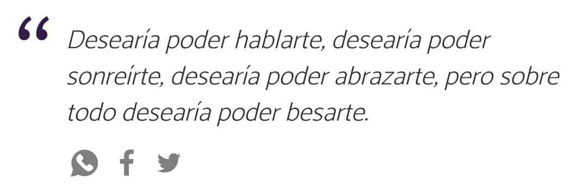

¿Por qué te amo un chingo?
Pue la verdad es que no se porque te amo un chingo, simplemente mientras te iba conociendo me iba dando cuenta que eres muy diferente a las demás, eres increiblemente diferente y especial.
Tu forma de ser, tan genial, tan especial me hizo cambiar algunas cosas de mi un poco, y pues me gusto todo de ti desde hace tiempo, pero tambien no queria decirte nada porque no pense que me quisieras tanto como yo a ti.
Weno en fin, todo eso creo que ya te lo habia dicho, pero hay algo que no, por ejemplo que siempre que me hablas me siento feliz, como todos cada que su crush les contesta, pero en mi caso es hermoso, como no.
Tambien es que he tenido pedos en la escuela y tal y pues no me sentia chido ninguno de los dias, incluso antes de que estuviera la cuarentena, me sentia decepcionado de mi mismo, me sentia muy mal para resumirlo
, pero llegaste tu, la verdad si andaba muy depresivo, no tenia ganas de hacer nada, pero encerio que basicamente si me ayudaste mucho, me haces cada dia muy feliz ♥, como no xd
Inserto frase para ti♥:

PD: Espero algun dia tener un beso tuyo sabor chemtos